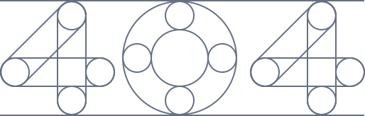

<section class="bg-white dark:bg-gray-900">
    <div class="container min-h-screen px-6 py-12 mx-auto lg:flex lg:items-center lg:gap-12">
        <div class="w-full lg:w-1/2">
            <p class="text-sm font-medium text-blue-500 dark:text-blue-400">{{ 'NOT_FOUND.ERROR' | translate }}</p>
            <h1 class="mt-3 text-2xl font-semibold text-gray-800 dark:text-black md:text-3xl">{{ 'NOT_FOUND.TITLE' |
                translate }}</h1>
            <p class="mt-4 text-gray-500 dark:text-gray-400">{{ 'NOT_FOUND.MESSAGE' | translate }}</p>

            <div class="flex items-center mt-6 gap-x-3">
                <button routerLink="/login"
                    class="border w-1/2 px-5 py-2 text-sm tracking-wide text-black transition-colors duration-200 bg-white-500 rounded-lg shrink-0 sm:w-auto hover:bg-gray-600 dark:hover:bg-gray-300 dark:bg-white-600">
                    <svg xmlns="http://www.w3.org/2000/svg" fill="none" viewBox="0 0 24 24" stroke-width="1.5"
                        stroke="currentColor" class="w-5 h-5 rtl:rotate-180">
                        <path stroke-linecap="round" stroke-linejoin="round"
                            d="M6.75 15.75L3 12m0 0l3.75-3.75M3 12h18" />
                    </svg>
                    <span>{{ 'NOT_FOUND.BACK_BUTTON' | translate }}</span>
                </button>

                <button routerLink="/login"
                    class="border-0 w-1/2 px-5 py-2 text-sm tracking-wide text-white transition-colors duration-200 bg-blue-500 rounded-lg shrink-0 sm:w-auto hover:bg-blue-600 dark:hover:bg-blue-500 dark:bg-blue-600">
                    {{ 'NOT_FOUND.LOGIN_BUTTON' | translate }}
                </button>
            </div>
        </div>

        <div class="relative w-full mt-12 lg:w-1/2 lg:mt-0">
            
        </div>
    </div>
</section>